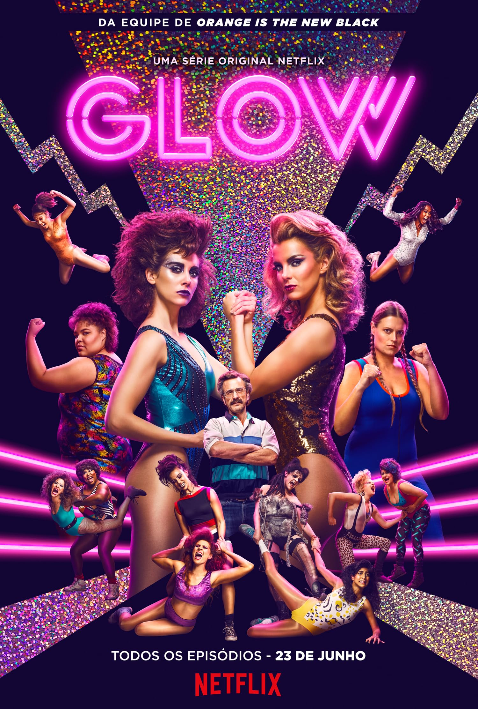
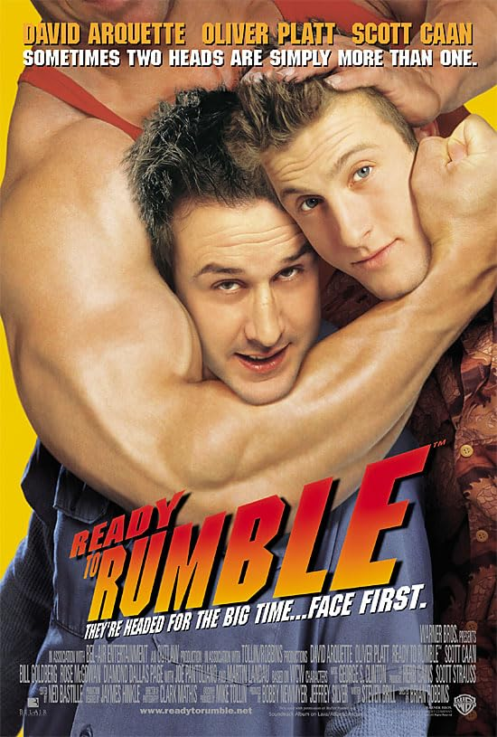
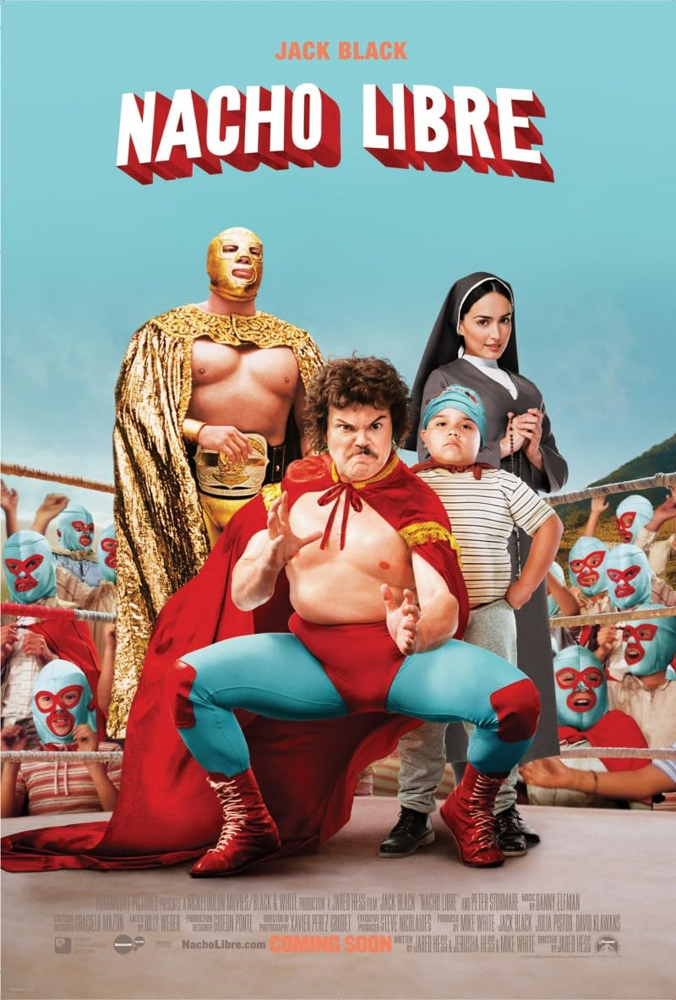
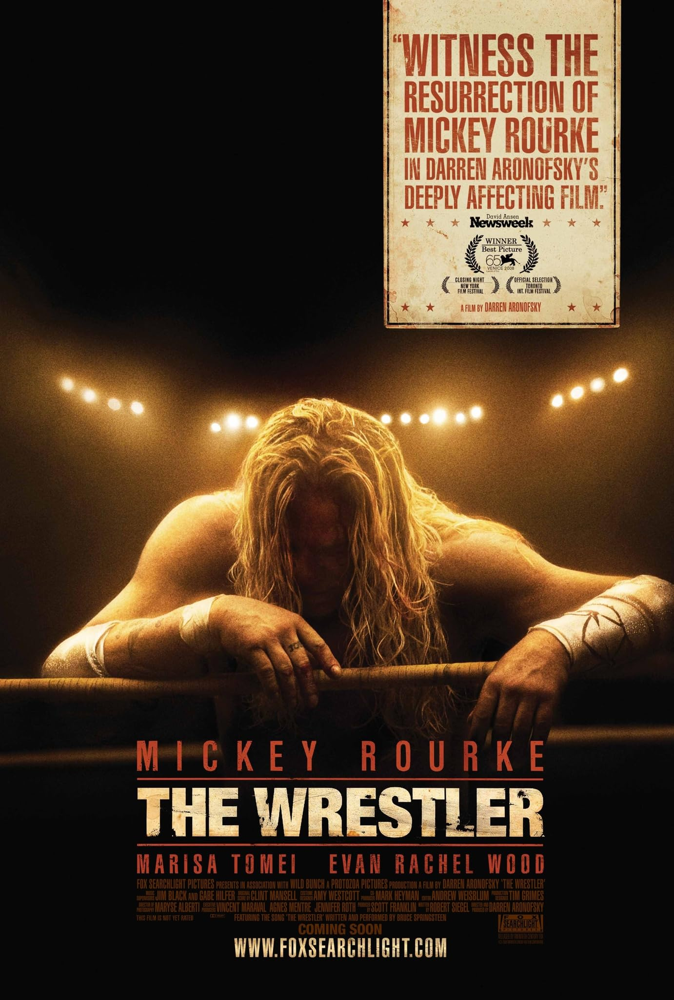
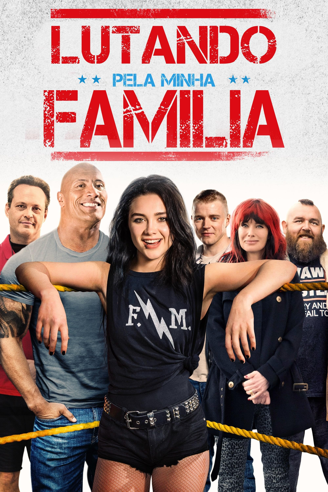
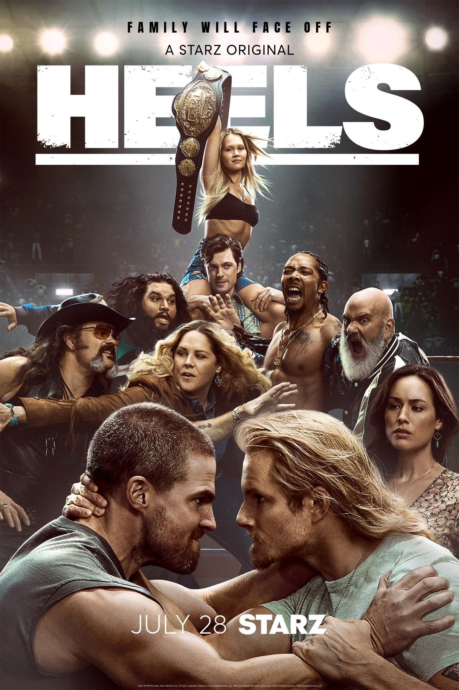
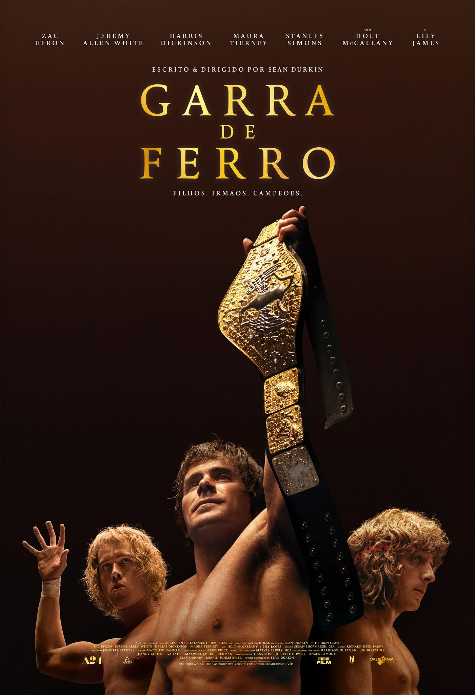
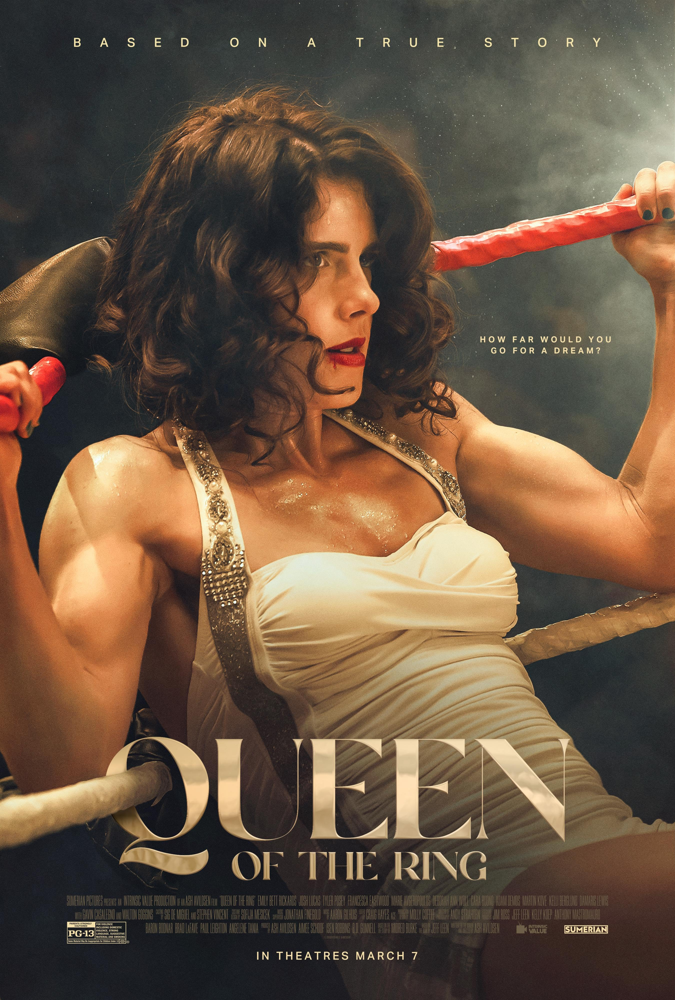

Luta livre, lucha libre, pro-wrestling, telecatch, puroresu... São muitos nomes que definem essa arte, mas o seu universo é muito mais profundo do que se imagina.
TESTE USUÁRIO
Luta livre, lucha libre, pro-wrestling, telecatch, puroresu... São muitos nomes que definem essa arte, mas o seu universo é muito mais profundo do que se imagina.
A luta-livre também está nos telões com filmes e séries que exploram esse universo, desde os besteirols até o drama dos atletas que buscam entreter o público.







